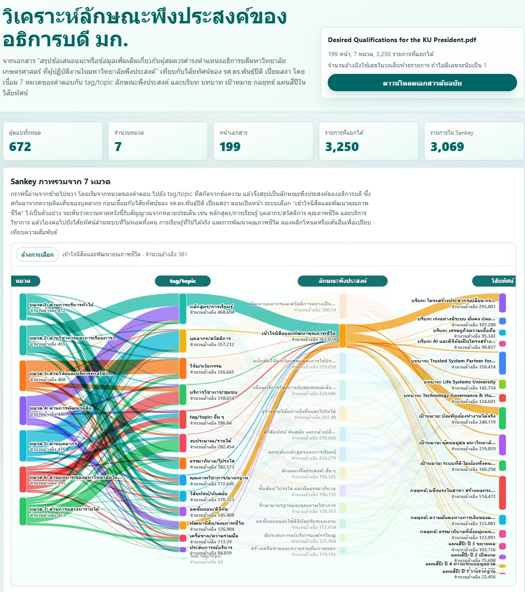

ทำให้เสียง 672 คนในมหาวิทยาลัยอ่านได้ เห็นภาพ และใช้ตัดสินใจได้จริง
{kind=link}

เอกสาร 199 หน้า จากความคิดเห็นของคนในมหาวิทยาลัย 672 คน เป็นข้อมูลที่มีคุณค่ามาก แต่ในรูปแบบข้อความจำนวนมาก คำถามสำคัญคือใครจะอ่านไหว และแม้อ่านไหว จะมองเห็นภาพรวม ทิศทางร่วม และประเด็นที่ควรใช้ตัดสินใจได้ชัดแค่ไหน
ปัญหาของข้อมูลลักษณะนี้ไม่ใช่ไม่มีเนื้อหา แต่คือข้อมูลอยู่ในรูปแบบที่ทำให้ใช้ต่อได้ยาก หากปล่อยให้อยู่เป็นเอกสารยาว ๆ เสียงของคนจำนวนมากอาจกลายเป็นเพียงไฟล์อ้างอิง มากกว่าจะเป็นฐานสำหรับการตัดสินใจเชิงระบบ
การนำข้อมูลทั้งหมดมาวิเคราะห์และจัดทำเป็นเว็บไซต์ จึงไม่ใช่การตีความใหม่แทนเจ้าของเสียง แต่เป็นการทำให้สิ่งที่มีอยู่แล้วมองเห็นได้ชัดขึ้น เว็บไซต์ช่วยย่อย จัดกลุ่ม และวางโครงสร้างให้เห็นว่าเสียงของคนในมหาวิทยาลัยกำลังไปในทิศทางไหน
สิ่งนี้สำคัญเพราะความคิดเห็นจากคนในมหาวิทยาลัยไม่ได้มีค่าเพียงในฐานะข้อความแต่ละชิ้น แต่มีค่าเมื่อเรามองเห็น pattern เห็นความถี่ เห็นประเด็นร่วม เห็นความคาดหวัง และเห็นช่องว่างที่ผู้เสนอนโยบายต้องตอบให้ได้
ข้อมูลที่ดีต้องช่วยให้ตัดสินใจ ไม่ใช่แค่เก็บไว้เป็นหลักฐาน
ถ้าข้อมูลจำนวนมากถูกจัดไว้โดยไม่มีเครื่องมือช่วยอ่าน ผู้ตัดสินใจอาจเห็นเพียงบางส่วนที่เด่นหรือจำง่าย แต่พลาดเสียงที่กระจายอยู่ในรายละเอียด การจัดทำเว็บไซต์จึงเป็นการเปลี่ยนข้อมูลจากเอกสารยาวให้เป็นdecision support ที่อ่าน ตรวจสอบ และกลับไปดูรายละเอียดได้สะดวกขึ้น
การทำแบบนี้ยังช่วยให้การสนทนาเรื่องผู้สมควรดำรงตำแหน่งอธิการบดีมีฐานที่ชัดขึ้น ไม่ใช่พึ่งความรู้สึก ภาพจำ หรือเสียงดังบางกลุ่มเท่านั้น แต่กลับไปดูได้ว่าคนในมหาวิทยาลัยพูดเรื่องอะไร กังวลเรื่องอะไร และให้ความสำคัญกับอะไร
เทียบเสียงของมหาวิทยาลัยกับวิสัยทัศน์ เพื่อเห็นทั้งจุดสอดคล้องและจุดที่ต้องคิดต่อ
อีกชั้นหนึ่งของงานนี้คือการลองเทียบข้อเสนอแนะกับวิสัยทัศน์ที่เสนอ เพื่อดูว่ามีจุดใดสอดคล้องกัน และจุดใดยังต้องคิดต่อ นี่ไม่ใช่การใช้ข้อมูลเพื่อยืนยันตัวเอง แต่เป็นการใช้ข้อมูลเพื่อถามว่าข้อเสนอที่มีอยู่ตอบโจทย์เสียงของมหาวิทยาลัยได้มากพอหรือยัง
หากมีจุดสอดคล้อง ก็ทำให้เห็นว่าทิศทางบางเรื่องไม่ได้เกิดจากความคิดของผู้สมัครคนเดียว แต่สะท้อนความต้องการร่วมของคนในองค์กร หากมีจุดที่ยังไม่ชัด ก็เป็นโอกาสในการปรับคำตอบ ปรับกลไก และคิดต่ออย่างรับผิดชอบ
ความโปร่งใสเริ่มจากการทำให้ข้อมูลที่มีอยู่ถูกมองเห็น
ในบริบทของการสรรหาอธิการบดี ความโปร่งใสไม่ได้หมายถึงการเปิดข้อมูลอย่างเดียว แต่ต้องทำให้ข้อมูลนั้นอ่านได้ ใช้ได้ และตรวจสอบได้ เพราะข้อมูลที่เปิดแต่ไม่มีใครอ่านไหว ก็ยังไม่ช่วยให้การตัดสินใจดีขึ้นเท่าที่ควร
การจัดโครงสร้างข้อมูลจึงเป็นงานธรรมาภิบาลอย่างหนึ่ง เป็นการเคารพเสียงของคนในมหาวิทยาลัยโดยไม่ปล่อยให้เสียงเหล่านั้นจมหายอยู่ในเอกสารยาว และทำให้ข้อมูลกลายเป็นฐานร่วมสำหรับการตัดสินใจที่จริงจังมากขึ้น